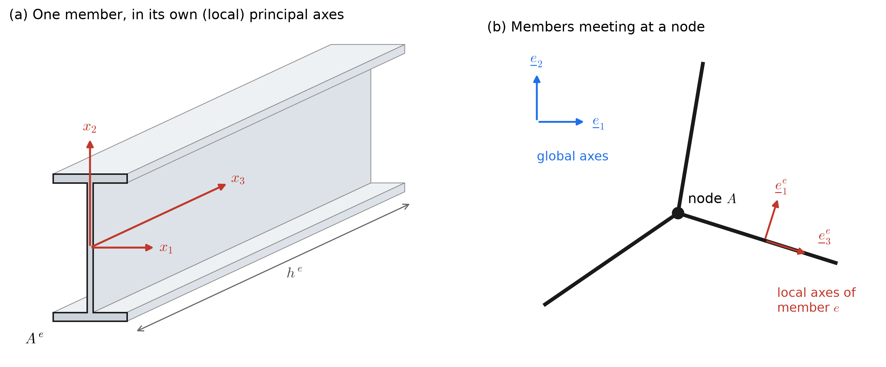
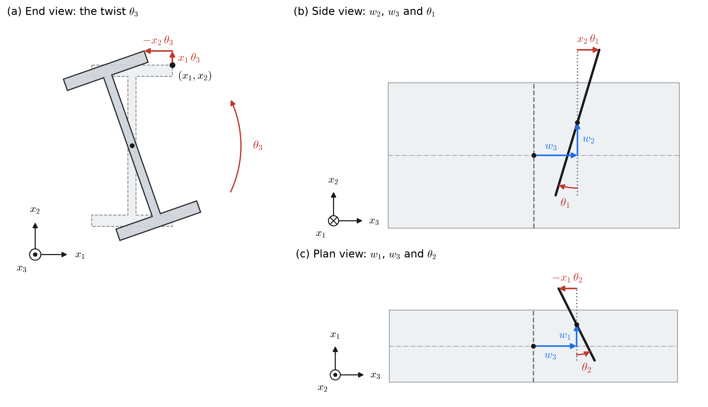

Appendix H — Beams and Frames from Three-Dimensional Elasticity
Derivation of the time-dependent Timoshenko frame, following Section 5.4 of Hughes.
H.1 Assumptions

- The domain is the union of the members, \[ \Omega = \bigcup_{e=1}^{n_{el}} \Omega^e, \qquad \Omega^e = \left\{ \left(x^e_1, x^e_2, x^e_3\right) \in \mathbb{R}^3 \;\middle|\; x^e_3 \in \left[0, h^e\right],\ \left(x^e_1, x^e_2\right) \in A^e \subset \mathbb{R}^2 \right\}, \] where \(h^e\) is the length of the \(e\)th member and \(A^e\) is its cross-section. The coordinates \(x^e_1\), \(x^e_2\), \(x^e_3\) are defined locally with respect to the principal axes of the member, so that \[ 0 = \int_{A^e} x^e_1\;dA = \int_{A^e} x^e_2\;dA = \int_{A^e} x^e_1 x^e_2\;dA , \] and also \(0 = \int_{A^e} \rho\,x^e_1\,dA = \int_{A^e} \rho\,x^e_2\,dA = \int_{A^e} \rho\,x^e_1 x^e_2\,dA\) (for example, when \(\rho\) is constant over the cross-section).
- \(\sigma_{\alpha\beta} = 0\) for \(\alpha, \beta \in \{1, 2\}\) (i.e. the stresses in the plane of the cross-section are negligible).
- The displacements are \[ \begin{aligned} u_1(x_1, x_2, x_3) &= w_1(x_3) - x_2\,\theta_3(x_3), \\ u_2(x_1, x_2, x_3) &= w_2(x_3) + x_1\,\theta_3(x_3), \\ u_3(x_1, x_2, x_3) &= w_3(x_3) - x_1\,\theta_2(x_3) + x_2\,\theta_1(x_3), \end{aligned} \] that is, there is no warping of the cross-section (Figure H.2). This is a modeling decision, and it can be relaxed by adding a warping term \(\omega(x_1, x_2)\,\theta_3'(x_3)\) to \(u_3\), where \(\omega\) is Saint-Venant’s warping function of the cross-section. If the twist is uniform, so that \(\theta_3''\) is neglected, the derivation below is unchanged except that \(J = I_1 + I_2\) in \(m_3 = \mu J\,\theta_3'\) becomes the Saint-Venant torsion constant \(J = I_1 + I_2 - \int_A |\nabla\omega|^2\,dA\), computed in the torsion example of Class 24. If \(\theta_3''\) is kept, as where warping is restrained at a support, the result is Vlasov’s theory of non-uniform torsion, with axial warping stresses \(E\,\omega\,\theta_3''\), a fourth-order torsion equation \(E\,C_w\,\theta_3'''' - \mu J\,\theta_3'' = C_3\) with \(C_w = \int_A \omega^2\,dA\) (and \(\omega\) measured from the shear center), and a seventh degree of freedom, the warping, at each node.
- The displacements are small.
- The deformation is elastic (not plastic), and, for simplicity, the material is homogeneous and isotropic, so that \(\sigma_{ij} = \lambda\,\varepsilon_{kk}\,\delta_{ij} + 2\mu\,\varepsilon_{ij}\).

Recall the equations of three-dimensional elasticity:
\[ \left. \begin{aligned} \sigma_{ij,j} + f_i &= \rho\,u_{i,tt} \\ \sigma_{ij} &= c_{ijkl}\,\varepsilon_{kl} \\ \varepsilon_{ij} &= u_{(i,j)} \end{aligned} \right\} \text{ in } \Omega , \qquad u_i = g_i \text{ on } \Gamma_{g_i}, \qquad \sigma_{ij}\,n_j = h_i \text{ on } \Gamma_{h_i} . \]
H.2 Consequences for the stresses and strains
From assumption 2,
\[ 0 = \sigma_{\alpha\beta} = \lambda\,\varepsilon_{kk}\,\delta_{\alpha\beta} + 2\mu\,\varepsilon_{\alpha\beta} \quad\Longrightarrow\quad \varepsilon_{\alpha\alpha} = \frac{-\lambda}{\lambda + \mu}\,\varepsilon_{33} \quad\Longrightarrow\quad \varepsilon_{\alpha\beta} = \frac{-\lambda\,\varepsilon_{33}}{2(\lambda + \mu)}\,\delta_{\alpha\beta} . \qquad (\star) \]
The remaining stresses are then
\[ \sigma_{33} = \lambda\,\varepsilon_{kk} + 2\mu\,\varepsilon_{33} = \lambda\,\varepsilon_{\alpha\alpha} + (\lambda + 2\mu)\,\varepsilon_{33} \quad\Longrightarrow\quad \sigma_{33} = E\,\varepsilon_{33}, \qquad \sigma_{\alpha 3} = 2\mu\,\varepsilon_{\alpha 3} . \]
From the displacements of assumption 3,
\[ \begin{aligned} \varepsilon_{\alpha\beta} &= u_{(\alpha,\beta)} = 0 && \text{(note the inconsistency with } (\star)\text{, which is acceptable; see Hughes)}, \\ \varepsilon_{13} &= u_{(1,3)} = \tfrac{1}{2}\left(\frac{\partial u_1}{\partial x_3} + \frac{\partial u_3}{\partial x_1}\right) = \tfrac{1}{2}\left(w_1' - x_2\,\theta_3' - \theta_2\right), \\ \varepsilon_{23} &= u_{(2,3)} = \tfrac{1}{2}\left(\frac{\partial u_2}{\partial x_3} + \frac{\partial u_3}{\partial x_2}\right) = \tfrac{1}{2}\left(w_2' + x_1\,\theta_3' + \theta_1\right), \\ \varepsilon_{33} &= u_{3,3} = w_3' - x_1\,\theta_2' + x_2\,\theta_1' , \end{aligned} \]
where a prime denotes \(d/dx_3\).
H.3 Virtual work
Multiplying the equation of motion by a virtual displacement \(\hat{u}_i\) and integrating,
\[ \int_\Omega \sigma_{ij,j}\,\hat{u}_i\;d\Omega + \int_\Omega f_i\,\hat{u}_i\;d\Omega = \int_\Omega \rho\,u_{i,tt}\,\hat{u}_i\;d\Omega . \]
Then, using the divergence theorem and the boundary conditions,
\[ \begin{aligned} \int_\Omega \rho\,u_{i,tt}\,\hat{u}_i\;d\Omega &= -\int_\Omega \sigma_{ij}\,\hat{u}_{(i,j)}\;d\Omega + \int_\Omega f_i\,\hat{u}_i\;d\Omega + \int_{\Gamma_h} \hat{u}_i\,\sigma_{ij}\,n_j\;d\Gamma \\ &= -\int_\Omega \sigma_{ij}\,\hat{u}_{(i,j)}\;d\Omega + \int_\Omega f_i\,\hat{u}_i\;d\Omega + \int_{\Gamma_h} \hat{u}_i\,h_i\;d\Gamma \\ &= \sum_{e=1}^{n_{el}} \left\{ \int_0^{h^e}\!\!\int_{A^e} -\left[2\,\hat{u}_{(\alpha,3)}\,\sigma_{\alpha 3} + \hat{u}_{(3,3)}\,\sigma_{33}\right] dA\,dx_3 + \int_0^{h^e}\!\!\int_{A^e} \hat{u}_i\,f_i\;dA\,dx_3 \right\} + \int_{\Gamma_h} \hat{u}_i\,h_i\;d\Gamma , \end{aligned} \]
where the factor of two comes from symmetry, \(\hat{u}_{(\alpha,3)}\,\sigma_{\alpha 3} = \hat{u}_{(3,\alpha)}\,\sigma_{3\alpha}\), and \(\sigma_{\alpha\beta} = 0\). Substituting the strains and displacements,
\[ \begin{aligned} \int_\Omega \rho\,u_{i,tt}\,\hat{u}_i\;d\Omega = \sum_{e=1}^{n_{el}} \Bigg\{ & \int_0^{h^e}\!\!\int_{A^e} -\Big[\left(\hat{w}_1' - x_2\,\hat{\theta}_3' - \hat{\theta}_2\right)\sigma_{13} + \left(\hat{w}_2' + x_1\,\hat{\theta}_3' + \hat{\theta}_1\right)\sigma_{23} + \left(\hat{w}_3' - x_1\,\hat{\theta}_2' + x_2\,\hat{\theta}_1'\right)\sigma_{33}\Big]\,dA\,dx_3 \\ &+ \int_0^{h^e}\!\!\int_{A^e} \left(\hat{w}_1 - x_2\,\hat{\theta}_3\right) f_1 + \left(\hat{w}_2 + x_1\,\hat{\theta}_3\right) f_2 + \left(\hat{w}_3 - x_1\,\hat{\theta}_2 + x_2\,\hat{\theta}_1\right) f_3\;dA\,dx_3 \\ &+ \int_{\Gamma^e_h} \left(\hat{w}_1 - x_2\,\hat{\theta}_3\right) h_1 + \left(\hat{w}_2 + x_1\,\hat{\theta}_3\right) h_2 + \left(\hat{w}_3 - x_1\,\hat{\theta}_2 + x_2\,\hat{\theta}_1\right) h_3\;d\Gamma^e \Bigg\} . \end{aligned} \]
H.4 Stress resultants and applied loads
Now let
| quantity | definition | meaning |
|---|---|---|
| \(q_\alpha\) | \(\displaystyle\int_{A^e} \sigma_{\alpha 3}\;dA\) | shear forces |
| \(q_3\) | \(\displaystyle\int_{A^e} \sigma_{33}\;dA\) | axial force |
| \(m_1\), \(m_2\) | \(\displaystyle\int_{A^e} \sigma_{33}\,x_2\;dA\), \(\displaystyle\int_{A^e} \sigma_{33}\,x_1\;dA\) | bending moments |
| \(m_3\) | \(\displaystyle\int_{A^e} \left(\sigma_{23}\,x_1 - \sigma_{13}\,x_2\right) dA\) | torsional (twisting) moment, or torque \(T\) |
| \(\bar{F}_i\) | \(\displaystyle\int_{A^e} f_i\;dA\) | body (or inertial) forces per unit length |
| \(\bar{C}_1\), \(\bar{C}_2\) | \(\displaystyle\int_{A^e} f_3\,x_2\;dA\), \(\displaystyle\int_{A^e} f_3\,x_1\;dA\) | applied moments per unit length |
| \(\bar{C}_3\) | \(\displaystyle\int_{A^e} \left(f_2\,x_1 - f_1\,x_2\right) dA\) | applied torsional moment per unit length |
Then
\[ \begin{aligned} \int_\Omega \rho\,u_{i,tt}\,\hat{u}_i\;d\Omega = \sum_{e=1}^{n_{el}} \Bigg\{ & \int_0^{h^e} -\Big[\left(\hat{w}_1' - \hat{\theta}_2\right) q_1 + \left(\hat{w}_2' + \hat{\theta}_1\right) q_2 + \hat{w}_3'\,q_3 + \hat{\theta}_1'\,m_1 - \hat{\theta}_2'\,m_2 + \hat{\theta}_3'\,m_3\Big]\,dx_3 \\ &+ \int_0^{h^e} \hat{w}_1\,\bar{F}_1 + \hat{w}_2\,\bar{F}_2 + \hat{w}_3\,\bar{F}_3 + \hat{\theta}_1\,\bar{C}_1 - \hat{\theta}_2\,\bar{C}_2 + \hat{\theta}_3\,\bar{C}_3\;dx_3 \\ &+ \int_{\Gamma^e_h} \left(\hat{w}_1 - x_2\,\hat{\theta}_3\right) h_1 + \left(\hat{w}_2 + x_1\,\hat{\theta}_3\right) h_2 + \left(\hat{w}_3 - x_1\,\hat{\theta}_2 + x_2\,\hat{\theta}_1\right) h_3\;d\Gamma^e \Bigg\} . \end{aligned} \]
Now, dealing with the boundary forces, the tractions on the lateral surface \(\partial A^e\) of a member are combined with the loads per unit length along the member,
\[ F_i = \int_{\partial A^e} h_i\;d(\partial A^e) + \bar{F}_i, \qquad C_1 = \int_{\partial A^e} h_3\,x_2\;d(\partial A^e) + \bar{C}_1, \qquad C_2 = \int_{\partial A^e} h_3\,x_1\;d(\partial A^e) + \bar{C}_2, \qquad C_3 = \int_{\partial A^e} \left(h_2\,x_1 - h_1\,x_2\right) d(\partial A^e) + \bar{C}_3 , \]
and the tractions on the ends of the members (at the nodes) give the end forces and moments
\[ \underline{Q}_A = \int_{A^e} h_i\;dA, \qquad \underline{M}_A = \begin{bmatrix} \int_{A^e} h_3\,x_2\;dA \\ \int_{A^e} h_3\,x_1\;dA \\ \int_{A^e} \left(h_2\,x_1 - h_1\,x_2\right) dA \end{bmatrix} . \]
Integrating by parts along each member then gives
\[ \begin{aligned} \int_\Omega \rho\,u_{i,tt}\,\hat{u}_i\;d\Omega = \sum_{e=1}^{n_{el}} \Bigg\{ & \int_0^{h^e} \hat{w}_1\left(q_1' + F_1\right) + \hat{w}_2\left(q_2' + F_2\right) + \hat{w}_3\left(q_3' + F_3\right) \\ &\qquad + \hat{\theta}_1\left(m_1' - q_2 + C_1\right) - \hat{\theta}_2\left(m_2' - q_1 + C_2\right) + \hat{\theta}_3\left(m_3' + C_3\right) dx_3 \Bigg\} + \text{(nodal terms)}, \end{aligned} \]
where the nodal terms collect the end values \(\hat{w}_i\,q_i\), \(\hat{\theta}_1\,m_1\), \(\hat{\theta}_2\,m_2\), \(\hat{\theta}_3\,m_3\) of each member together with the applied end forces and moments. When looking at the nodes, the sign of the end loads reverses, and the contributions of all of the members that meet at a node are transformed into the global axes and added, \(\sum_e \underline{t}^e\,\underline{q}^e_A\) and \(\sum_e \underline{t}^e\,\underline{m}^e_A\).
H.5 The strong form
In the static case, the variational formulation gives rise to the following strong system along each member:
\[ \begin{aligned} q_3' + F_3 &= 0 && \text{axial load} \\ q_1' + F_1 &= 0 && \text{shear} \\ q_2' + F_2 &= 0 && \text{shear} \\ m_1' - q_2 + C_1 &= 0 && \text{bending} \\ m_2' - q_1 + C_2 &= 0 && \text{bending} \\ m_3' + C_3 &= 0 && \text{torsion (with no warping)} \end{aligned} \]
At the nodes,
\[ \left. \begin{aligned} \sum_{e \in \mathcal{E}_A} \underline{t}^e\,\underline{q}^e_A + \underline{Q}_A &= \underline{0} \\ \sum_{e \in \mathcal{E}_A} \underline{t}^e\,\underline{m}^e_A + \underline{M}_A &= \underline{0} \end{aligned} \right\} \text{ equilibrium at nodes with known applied forces,} \qquad \left. \begin{aligned} \underline{t}^e\,\underline{w}^e_A &= \underline{W}_A \\ \underline{t}^e\,\underline{\theta}^e_A &= \underline{\Theta}_A \end{aligned} \right\} \text{ at nodes with known displacements and angles,} \]
where \(\mathcal{E}_A\) is the set of members that meet at node \(A\), and \(\underline{t}^e\) is the transformation from the local axes of member \(e\) to the global axes (see below).
H.6 Constitutive relations
The following constitutive laws also hold. Using the strains above and assumption 1,
\[ \begin{aligned} q_1 &= \int_A \sigma_{13}\;dA = \int_A 2\mu\left[\tfrac{1}{2}\left(w_1' - x_2\,\theta_3' - \theta_2\right)\right] dA = \mu \int_A \left(w_1' - \theta_2\right) dA - \mu\,\theta_3' \int_A x_2\;dA = \mu\,A\,\gamma_1, \qquad \gamma_1 = w_1' - \theta_2, \\ q_2 &= \mu\,A\,\gamma_2, \qquad \gamma_2 = w_2' + \theta_1, \\ q_3 &= \int_A \sigma_{33}\;dA = E\int_A \left(w_3' - x_1\,\theta_2' + x_2\,\theta_1'\right) dA = E\,A\,\varepsilon, \qquad \varepsilon = w_3', \\ m_1 &= \int_A \sigma_{33}\,x_2\;dA = E\int_A \left(w_3' - x_1\,\theta_2' + x_2\,\theta_1'\right) x_2\;dA = E\,\theta_1' \int_A x_2^2\;dA = E\,I_1\,\kappa_1, \qquad \kappa_1 = \theta_1', \\ m_2 &= \int_A \sigma_{33}\,x_1\;dA = E\int_A \left(w_3' - x_1\,\theta_2' + x_2\,\theta_1'\right) x_1\;dA = -E\,\theta_2' \int_A x_1^2\;dA = -E\,I_2\,\kappa_2, \qquad \kappa_2 = \theta_2', \\ m_3 &= \int_A \left(\sigma_{23}\,x_1 - \sigma_{13}\,x_2\right) dA = \mu \int_A \left[\left(w_2' + x_1\,\theta_3' + \theta_1\right) x_1 - \left(w_1' - x_2\,\theta_3' - \theta_2\right) x_2\right] dA = \mu\,\theta_3' \int_A \left(x_1^2 + x_2^2\right) dA = \mu\,J\,\psi, \qquad \psi = \theta_3', \end{aligned} \]
where \(I_1 = \int_A x_2^2\,dA\), \(I_2 = \int_A x_1^2\,dA\), and \(J = \int_A \left(x_1^2 + x_2^2\right) dA = I_1 + I_2\). If the cross-section is allowed to warp, \(J\) is instead the Saint-Venant torsion constant, computed in the torsion example of Class 24. There, \(m_3\) is the torque \(T\) and \(\psi = \theta_3'\) is the twist per unit length \(\theta\), so that \(m_3 = \mu J\,\psi\) reads \(T = G J \theta\). In the shear forces, \(A\) is usually replaced by an effective shear area \(A^s_\alpha\), so that \(q_\alpha = \mu\,A^s_\alpha\,\gamma_\alpha\), where \(\mu\) is the second Lamé constant (the shear modulus \(G\)).
H.7 Time-dependent terms
Looking at the left-hand side,
\[ \begin{aligned} \int_\Omega \rho\,u_{i,tt}\,\hat{u}_i\;d\Omega &= \sum_{e=1}^{n_{el}} \int_0^{h^e}\!\!\int_{A^e} \rho\left(\hat{w}_1 - x_2\,\hat{\theta}_3\right) u_{1,tt} + \rho\left(\hat{w}_2 + x_1\,\hat{\theta}_3\right) u_{2,tt} + \rho\left(\hat{w}_3 - x_1\,\hat{\theta}_2 + x_2\,\hat{\theta}_1\right) u_{3,tt}\;dA\,dx_3 . \end{aligned} \]
Let
\[ r_i = \int_{A^e} \rho\,u_{i,tt}\;dA, \qquad s_1 = \int_{A^e} \rho\,u_{3,tt}\,x_2\;dA, \qquad s_2 = \int_{A^e} \rho\,u_{3,tt}\,x_1\;dA, \qquad s_3 = \int_{A^e} \rho\left(u_{2,tt}\,x_1 - u_{1,tt}\,x_2\right) dA , \]
so that
\[ \int_\Omega \rho\,u_{i,tt}\,\hat{u}_i\;d\Omega = \sum_{e=1}^{n_{el}} \int_0^{h^e} r_1\,\hat{w}_1 + r_2\,\hat{w}_2 + r_3\,\hat{w}_3 + s_1\,\hat{\theta}_1 - s_2\,\hat{\theta}_2 + s_3\,\hat{\theta}_3\;dx_3 . \]
Then, at the centroids of the members, the following equations hold:
\[ q_1' + F_1 = r_1, \quad q_2' + F_2 = r_2, \quad q_3' + F_3 = r_3, \quad m_1' - q_2 + C_1 = s_1, \quad m_2' - q_1 + C_2 = s_2, \quad m_3' + C_3 = s_3 . \]
But, with the displacements of assumption 3 and the principal axes of assumption 1,
\[ \begin{aligned} r_i &= \int_{A^e} \rho\,u_{i,tt}\;dA = \bar{\mu}\,w_{i,tt}, && \bar{\mu} = \int_{A^e} \rho\;dA \ \text{(mass per unit length)}, \\ s_1 &= \int_{A^e} \rho\,u_{3,tt}\,x_2\;dA = \hat{I}_1\,\theta_{1,tt}, && \hat{I}_1 = \int_{A^e} \rho\,x_2^2\;dA \ (= \rho\,I_1), \\ s_2 &= \int_{A^e} \rho\,u_{3,tt}\,x_1\;dA = -\hat{I}_2\,\theta_{2,tt}, && \hat{I}_2 = \int_{A^e} \rho\,x_1^2\;dA \ (= \rho\,I_2), \\ s_3 &= \int_{A^e} \rho\left(u_{2,tt}\,x_1 - u_{1,tt}\,x_2\right) dA = \hat{J}\,\theta_{3,tt}, && \hat{J} = \int_{A^e} \rho\left(x_1^2 + x_2^2\right) dA \ (= \rho\,J) . \end{aligned} \]
Synthesizing, we have
\[ \begin{aligned} &\sum_{e=1}^{n_{el}} \int_0^{h^e} \bar{\mu}\,w_{1,tt}\,\hat{w}_1 + \bar{\mu}\,w_{2,tt}\,\hat{w}_2 + \bar{\mu}\,w_{3,tt}\,\hat{w}_3 + \hat{I}_1\,\theta_{1,tt}\,\hat{\theta}_1 + \hat{I}_2\,\theta_{2,tt}\,\hat{\theta}_2 + \hat{J}\,\theta_{3,tt}\,\hat{\theta}_3\;dx_3 \\ &\quad= \sum_{e=1}^{n_{el}} \int_0^{h^e} \hat{w}_1\left(q_1' + F_1\right) + \hat{w}_2\left(q_2' + F_2\right) + \hat{w}_3\left(q_3' + F_3\right) + \hat{\theta}_1\left(m_1' - q_2 + C_1\right) - \hat{\theta}_2\left(m_2' - q_1 + C_2\right) + \hat{\theta}_3\left(m_3' + C_3\right) dx_3 + \text{(nodal terms)} . \end{aligned} \]
In differential form, these become
\[ \begin{aligned} q_3' + F_3 &= \bar{\mu}\,w_{3,tt}, && q_3 = E\,A\,w_3', \\ q_1' + F_1 &= \bar{\mu}\,w_{1,tt}, && q_1 = \mu\,A^s_1\left(w_1' - \theta_2\right), \\ q_2' + F_2 &= \bar{\mu}\,w_{2,tt}, && q_2 = \mu\,A^s_2\left(w_2' + \theta_1\right), \\ m_1' - q_2 + C_1 &= \hat{I}_1\,\theta_{1,tt}, && m_1 = E\,I_1\,\theta_1', \\ m_2' - q_1 + C_2 &= -\hat{I}_2\,\theta_{2,tt}, && m_2 = -E\,I_2\,\theta_2', \\ m_3' + C_3 &= \hat{J}\,\theta_{3,tt}, && m_3 = \mu\,J\,\theta_3', \end{aligned} \]
together with the conditions at the nodes,
\[ \sum_e \underline{t}^e\,\underline{q}^e_A + \underline{Q}_A = \underline{0}, \qquad \sum_e \underline{t}^e\,\underline{m}^e_A + \underline{M}_A = \underline{0}, \qquad \underline{t}^e\,\underline{w}^e_A = \underline{W}_A, \qquad \underline{t}^e\,\underline{\theta}^e_A = \underline{\Theta}_A . \]
H.8 The weak form of a Timoshenko frame
Alternatively, in weak form, the equations are
\[ \begin{aligned} &\sum_{e=1}^{n_{el}} \Bigg\{ \int_0^{h^e} \Big[\left(\hat{w}_1' - \hat{\theta}_2\right) \mu A^s_1 \left(w_1' - \theta_2\right) + \left(\hat{w}_2' + \hat{\theta}_1\right) \mu A^s_2 \left(w_2' + \theta_1\right) + \hat{w}_3'\,E A\,w_3' \\ &\qquad\qquad + \hat{\theta}_1'\,E I_1\,\theta_1' + \hat{\theta}_2'\,E I_2\,\theta_2' + \hat{\theta}_3'\,\mu J\,\theta_3'\Big]\,dx_3 - \int_0^{h^e} \left(\hat{w}_1 F_1 + \hat{w}_2 F_2 + \hat{w}_3 F_3 + \hat{\theta}_1 C_1 - \hat{\theta}_2 C_2 + \hat{\theta}_3 C_3\right) dx_3 \Bigg\} - \sum_{A \in \mathcal{F}} \left(\underline{\hat{w}}^T_A\,\underline{Q}_A + \underline{\hat{\theta}}^T_A\,\underline{M}_A\right) \\ &\quad= -\sum_{e=1}^{n_{el}} \int_0^{h^e} \hat{w}_1\,\bar{\mu}\,w_{1,tt} + \hat{w}_2\,\bar{\mu}\,w_{2,tt} + \hat{w}_3\,\bar{\mu}\,w_{3,tt} + \hat{\theta}_1\,\hat{I}_1\,\theta_{1,tt} + \hat{\theta}_2\,\hat{I}_2\,\theta_{2,tt} + \hat{\theta}_3\,\hat{J}\,\theta_{3,tt}\;dx_3 , \end{aligned} \]
where \(\mathcal{F}\) is the set of nodes with known applied forces, and the Dirichlet conditions are imposed at the nodes with known displacements and angles. If the problem is static (no time dependence), the right side is zero, and
\[ \begin{aligned} &\sum_{e=1}^{n_{el}} \int_0^{h^e} \Big[\left(\hat{w}_1' - \hat{\theta}_2\right) \mu A^s_1 \left(w_1' - \theta_2\right) + \left(\hat{w}_2' + \hat{\theta}_1\right) \mu A^s_2 \left(w_2' + \theta_1\right) + \hat{\theta}_1'\,E I_1\,\theta_1' + \hat{\theta}_2'\,E I_2\,\theta_2' + \hat{w}_3'\,E A\,w_3' + \hat{\theta}_3'\,\mu J\,\theta_3'\Big]\,dx_3 \\ &\quad= \sum_{e=1}^{n_{el}} \int_0^{h^e} \left(\hat{w}_1 F_1 + \hat{w}_2 F_2 + \hat{w}_3 F_3 + \hat{\theta}_1 C_1 - \hat{\theta}_2 C_2 + \hat{\theta}_3 C_3\right) dx_3 + \sum_{A \in \mathcal{F}} \left(\underline{\hat{w}}^T_A\,\underline{Q}_A + \underline{\hat{\theta}}^T_A\,\underline{M}_A\right) . \end{aligned} \]
Every member needs six sets of basis functions: axial, major shear, minor shear, major moment, minor moment, and torsion.
H.9 The Bernoulli–Euler frame
If shear deformation is neglected, the rotations are no longer independent: setting the shear strains \(\gamma_1 = w_1' - \theta_2\) and \(\gamma_2 = w_2' + \theta_1\) to zero gives \(\theta_2 = w_1'\) and \(\theta_1 = -w_2'\), so that
\[ \begin{aligned} u_1(x_1, x_2, x_3) &= w_1(x_3) - x_2\,\theta_3(x_3), \\ u_2(x_1, x_2, x_3) &= w_2(x_3) + x_1\,\theta_3(x_3), \\ u_3(x_1, x_2, x_3) &= w_3(x_3) - x_1\,\frac{\partial w_1}{\partial x_3} - x_2\,\frac{\partial w_2}{\partial x_3} + \omega(x_1, x_2)\,\theta_3' , \end{aligned} \]
where \(\theta_3\) is the twisting angle and the warping function \(\omega\) is again assumed to be zero. (The signs follow from the Timoshenko kinematics above.) The strains are then \(\varepsilon_{\alpha\beta} = 0\), \(\varepsilon_{13} = -\tfrac{1}{2}\,x_2\,\theta_3'\), \(\varepsilon_{23} = \tfrac{1}{2}\,x_1\,\theta_3'\), and \(\varepsilon_{33} = w_3' - x_1\,w_1'' - x_2\,w_2''\). The same steps give \(q_3 = E A\,w_3'\), \(m_1 = -E I_1\,w_2''\), \(m_2 = -E I_2\,w_1''\), and \(m_3 = \mu J\,\theta_3'\), and taking the derivative of the moment equations to eliminate the shear forces gives, in the static case,
\[ \begin{aligned} q_3' + F_3 &= 0 && \text{axial load} \\ m_1'' - q_2' + C_1' = m_1'' + F_2 + C_1' &= 0 && \text{bending} \\ m_2'' - q_1' + C_2' = m_2'' + F_1 + C_2' &= 0 && \text{bending} \\ m_3' + C_3 &= 0 && \text{twisting (torsion)} \end{aligned} \]
The shear forces can then be post-processed from the moments. With the time-dependent terms, \(r_i = \bar{\mu}\,w_{i,tt}\), \(s_1 = -\hat{I}_1\,w_{2,tt}'\), \(s_2 = -\hat{I}_2\,w_{1,tt}'\), and \(s_3 = \hat{J}\,\theta_{3,tt}\), and the dynamic equations for a Bernoulli–Euler (not Timoshenko) frame are
\[ q_3' + F_3 = r_3, \qquad m_1'' + F_2 - r_2 + C_1' = s_1', \qquad m_2'' + F_1 - r_1 + C_2' = s_2', \qquad m_3' + C_3 = s_3 . \]
For a single beam in a plane, these reduce to the familiar Bernoulli–Euler and axial equations,
\[ \frac{\partial^2}{\partial x^2}\left(E I\,\frac{\partial^2 v}{\partial x^2}\right) = -\rho A\,\frac{\partial^2 v}{\partial t^2} + w(x,t), \qquad \frac{\partial}{\partial x}\left(E A\,\frac{\partial u}{\partial x}\right) = \rho A\,\frac{\partial^2 u}{\partial t^2} + f(x,t), \]
for \(x \in \Omega\) and \(t \in [0, T]\), with initial and boundary conditions.
H.10 Rayleigh damping
The semi-discrete equations of motion are
\[ \underline{\underline{M}}\,\ddot{\underline{d}} + \underline{\underline{C}}\,\dot{\underline{d}} + \underline{\underline{K}}\,\underline{d} = \underline{F} , \]
with the mass matrix \(\underline{\underline{M}}\), the viscous damping matrix \(\underline{\underline{C}}\), and the stiffness matrix \(\underline{\underline{K}}\). A Rayleigh damping matrix takes \(\underline{\underline{C}} = a\,\underline{\underline{M}} + b\,\underline{\underline{K}}\), where \(a\) and \(b\) are parameters. This corresponds to modifying the equation of linear momentum and the generalized Hooke’s law to
\[ \rho\,u_{i,tt} + a\,\rho\,u_{i,t} = \sigma_{ij,j} + f_i, \qquad \sigma_{ij} = c_{ijkl}\left(\varepsilon_{kl} + b\,\varepsilon_{kl,t}\right), \qquad \varepsilon_{kl} = u_{(k,l)} = \tfrac{1}{2}\left(u_{k,l} + u_{l,k}\right), \]
and \(f_i\) is also modified to account for damping in prescribed displacement boundary conditions (not noticed here). With \(\tilde{r}_i = \bar{\mu}\,w_{i,t}\) and \(\tilde{s}_i\) defined like \(s_i\) with one time derivative instead of two, the contribution of the stresses becomes
\[ \begin{aligned} q_\alpha' + F_\alpha + b\,q_{\alpha,t}' &= r_\alpha + a\,\tilde{r}_\alpha, \qquad q_3' + F_3 + b\,q_{3,t}' = r_3 + a\,\tilde{r}_3, \\ b\,m_{1,t}' + m_1' - q_2 + C_1 - b\,q_{2,t} &= s_1 + a\,\tilde{s}_1, \\ b\,m_{2,t}' + m_2' - q_1 + C_2 - b\,q_{1,t} &= s_2 + a\,\tilde{s}_2, \\ b\,m_{3,t}' + m_3' + C_3 &= s_3 + a\,\tilde{s}_3 , \end{aligned} \]
and, for the Bernoulli–Euler frame, combining these gives four equations: two bending equations, a torsional equation, and an axial equation,
\[ \begin{aligned} b\,m_{1,t}'' + m_1'' &= s_1' + a\,\tilde{s}_1' - F_2 + r_2 + a\,\tilde{r}_2 - C_1' && \text{bending} \\ b\,m_{2,t}'' + m_2'' &= s_2' + a\,\tilde{s}_2' - F_1 + r_1 + a\,\tilde{r}_1 - C_2' && \text{bending} \\ b\,m_{3,t}' + m_3' + C_3 &= s_3 + a\,\tilde{s}_3 && \text{torsion} \\ q_3' + b\,q_{3,t}' + F_3 &= r_3 + a\,\tilde{r}_3 && \text{axial} \end{aligned} \]
where \(m\), \(q\), \(r\), \(s\), \(C\), and \(F\) are as before.
H.11 From members to a frame
H.11.1 Local and global axes
Each member is described in its own local axes, while the nodes, where members meet, are described in global axes (Figure H.1 (b)). The \(x^e_j\) direction of member \(e\) is represented by a unit vector \(\underline{e}^e_j\), and the global \(x_i\) direction by a unit vector \(\underline{e}_i\). The transformation from local to global coordinates is
\[ \underline{t}^e = \left[t^e_{ij}\right], \qquad t^e_{ij} = \underline{e}_i \cdot \underline{e}^e_j . \]
For a frame member, whose end nodes each carry three displacements and three rotations,
\[ \underline{\underline{T}}^e = \begin{bmatrix} \underline{t} & 0 & 0 & 0 \\ 0 & \underline{t} & 0 & 0 \\ 0 & 0 & \underline{t} & 0 \\ 0 & 0 & 0 & \underline{t} \end{bmatrix} . \]
For a truss member, which carries only an axial force,
\[ \underline{\underline{T}}^{e\,T} = \begin{bmatrix} \lambda_x & 0 \\ \lambda_y & 0 \\ \lambda_z & 0 \\ 0 & \lambda_x \\ 0 & \lambda_y \\ 0 & \lambda_z \end{bmatrix} \qquad\Longleftrightarrow\qquad \underline{\underline{T}}^e = \begin{bmatrix} \lambda_x & \lambda_y & \lambda_z & 0 & 0 & 0 \\ 0 & 0 & 0 & \lambda_x & \lambda_y & \lambda_z \end{bmatrix} , \]
where \(\lambda_x\), \(\lambda_y\), \(\lambda_z\) are the direction cosines of the member.
H.11.2 Basis functions along a member
For one member and one set of basis functions numbered 0 to 8, only functions 0 and 8 contribute to the behavior at the nodes. Contributions from multiple members, as well as point forces, act on the nodes, where local behavior interacts with global behavior. This informs the ID and IEN arrays: the ends of the members have the last indices in the global ID array.
H.11.3 The element and global systems
For a member \(e\), the stiffness matrix is partitioned into the interior degrees of freedom (subscript 1) and the end (nodal) degrees of freedom (subscript 2). Only the nodal degrees of freedom are rotated into the global axes, so that, with \(\underline{\underline{\bar{T}}}^e = \begin{bmatrix} \underline{\underline{I}} & 0 \\ 0 & \underline{\underline{T}}^e \end{bmatrix}\),
\[ \underline{\underline{\hat{k}}}^e = \underline{\underline{\bar{T}}}^e\,\underline{\underline{k}}^e\,\underline{\underline{\bar{T}}}^{e\,T} = \begin{bmatrix} \underline{\underline{I}} & 0 \\ 0 & \underline{\underline{T}}^e \end{bmatrix} \begin{bmatrix} \underline{\underline{k}}_{11} & \underline{\underline{k}}_{12} \\ \underline{\underline{k}}_{21} & \underline{\underline{k}}_{22} \end{bmatrix} \begin{bmatrix} \underline{\underline{I}} & 0 \\ 0 & \underline{\underline{T}}^{e\,T} \end{bmatrix} = \begin{bmatrix} \underline{\underline{k}}_{11} & \underline{\underline{k}}_{12}\,\underline{\underline{T}}^{e\,T} \\ \underline{\underline{T}}^e\,\underline{\underline{k}}_{21} & \underline{\underline{T}}^e\,\underline{\underline{k}}_{22}\,\underline{\underline{T}}^{e\,T} \end{bmatrix} . \]
For a truss member discretized along its length, for example, the matrix \(\frac{1}{h}\,\mathrm{tridiag}(-1, 2, -1)\) (with 1 in the two end positions) is reordered so that the two end degrees of freedom come last, and only those are rotated.
Assembling all of the members gives
\[ \begin{bmatrix} \underline{\underline{k}}^{e_1}_{11} & & 0 & \underline{\underline{k}}^{e_1}_{12}\,\underline{\underline{T}}^{e_1\,T} \\ & \ddots & & \vdots \\ 0 & & \underline{\underline{k}}^{e_n}_{11} & \underline{\underline{k}}^{e_n}_{12}\,\underline{\underline{T}}^{e_n\,T} \\ \underline{\underline{T}}^{e_1}\,\underline{\underline{k}}^{e_1}_{21} & \cdots & \underline{\underline{T}}^{e_n}\,\underline{\underline{k}}^{e_n}_{21} & \sum_e \underline{\underline{T}}^e\,\underline{\underline{k}}^e_{22}\,\underline{\underline{T}}^{e\,T} \end{bmatrix} \begin{bmatrix} \underline{d}^{e_1} \\ \vdots \\ \underline{d}^{e_n} \\ \underline{D} \end{bmatrix} = \begin{bmatrix} \underline{f}^{e_1} \\ \vdots \\ \underline{f}^{e_n} \\ \sum_e \underline{\underline{T}}^e\,\underline{f}^e_2 + \sum_{A \in \mathcal{F}} \underline{F}_A \end{bmatrix} , \]
plus the Dirichlet conditions, where \(\underline{d}^e\) are the interior degrees of freedom of member \(e\) and \(\underline{D}\) are the global degrees of freedom of the nodes. This system can be solved using the Schur complement: the global nodal unknowns \(\underline{D}\) are solved first, from
\[ \left(\sum_e \underline{\underline{T}}^e \left[\underline{\underline{k}}^e_{22} - \underline{\underline{k}}^e_{21}\left(\underline{\underline{k}}^e_{11}\right)^{-1}\underline{\underline{k}}^e_{12}\right] \underline{\underline{T}}^{e\,T}\right) \underline{D} = \sum_e \underline{\underline{T}}^e \left[\underline{f}^e_2 - \underline{\underline{k}}^e_{21}\left(\underline{\underline{k}}^e_{11}\right)^{-1} \underline{f}^e_1\right] + \sum_{A \in \mathcal{F}} \underline{F}_A , \]
and then the interior unknowns of every member are found independently (in parallel) from \(\underline{\underline{k}}^e_{11}\,\underline{d}^e = \underline{f}^e_1 - \underline{\underline{k}}^e_{12}\,\underline{\underline{T}}^{e\,T}\,\underline{D}\).
H.12 Steps for a frame analysis code
- Import the frame: sticks and dots with appended data (an IFC file contains information about cross-sections and materials, as well as orientations).
- Extract material and section parameters for the beams and columns: material \(E\), \(G\); section \(I_x\), \(I_y\), \(A\), the effective shear area, \(J\), \(\rho\).
- Define and extract the load behavior on the structure, and convert distributed loads onto the members’ local coordinates (ASCE 7-22 gives good ballpark values, transferred using plates or tributary areas; or the ground motions of particular earthquakes).
- Define the constraints at the nodes: what can transfer loads and moments?
- Define the basis functions associated with each phenomenon on each member.
- Create the ID arrays from each member into the global ID array, and the IEN array from each member to its IDs.
- Compute \(\underline{\underline{k}}\) for each element, with blocks \(S_1S_1\), \(S_1M_1\), \(M_1S_1\), \(M_1M_1\), \(S_2S_2\), \(S_2M_2\), \(M_2S_2\), \(M_2M_2\), \(AA\), and \(TT\).
- Rotate the end degrees of freedom into global coordinates and assemble.
- Solve the system of equations.
- Add in the known displacements, and transform the results back into the members, rotating the global degrees of freedom and applying the local degrees of freedom.
- Plot the results using the original positions plus the displacements times a multiplier.